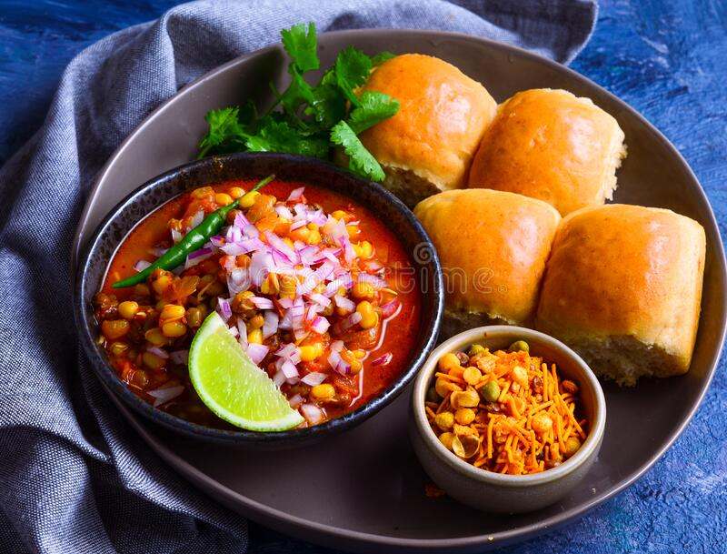
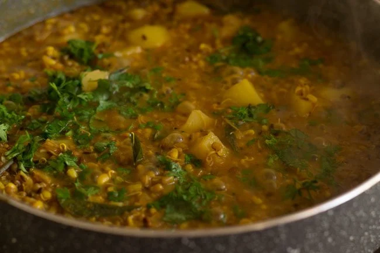

Misal Pav
Misal pav is a popular Maharashtrian street food of usal (sprouts curry) topped with onions, tomatoes, farsan (fried savory mixture), lemon juice, coriander leaves and served with a side of soft pav (Indian dinner rolls). The sprouts curry is made from moth bean sprouts. This misal recipe is a tasty and filling vegan dish that can be served as breakfast, lunch or brunch.

Ingredients
- 1 tsp ginger paste
- 2 tbsp oil
- 1 tsp garlic paste
- 1 cup onion, chopped
- 1 cup tomato, chopped
- 3/4 cup coconut,
- 3 tbsp oilspice paste (as above)to taste salt
- 1 tsp red chilli paste
- 1 tsp garam masala
- 1/2 tsp turmeric powder
- 1 tsp cumin-coriander powder
- 1/2 tsp cinnamon & clove powder
- 3 cups water (or as required to adjust the consistency)
- 3 tbsp oil1 tsp garlic paste1 tsp ginger paste
- 1/2 tsp hing (asafoetida)
- 1 1/2 cups steamed matki (moth) (soaked overnight)
- 1 cup potato (cut into square pieces), boiled
- 1/2 tsp turmeric powder1 tsp garam masala
- 1/2 tsp cinnamon-clove powder
- 1 lime juice
- 3 cups water (or as required)to taste salt
Method
-
Cooking Moth Bean Sprouts:
- Rinse 2 cups of moth bean sprouts first in running water a couple of times. If you don’t have moth bean sprouts use moong bean sprouts or mixed beans sprouts. Ensure that your sprouts are clean, fresh and do not have fungus or mould on them or a stinky smell. Drain the water from the sprouts very well and add the sprouts to a 3 litre stove-top pressure cooker. You can also cook them in a pot or Instant pot adding enough water as required.Also add 2 medium-sized potatoes (chopped) and ¼ teaspoon turmeric powder as required in the pressure cooker.
- Add 3 cups water or as required. Note that the water should be covering the matki sprouts and potatoes about 2 inches above. The quantity of water will vary with the depth and length of the pressure cooker, so add more water if needed. Keep in mind that if using mixed bean sprouts, then you will have to add more water, but for mung bean sprouts, add 3 cups water.Pressure cook for 2 to 3 whistles on medium heat. When the pressure falls or reduces on its own then only open the lid of the pressure cooker.
-
More Prep:
- In a small bowl, soak the tamarind in ⅓ or ½ cup warm or hot water for 25 to 30 minutes. In a small bowl, soak the tamarind in ⅓ or ½ cup warm or hot water for 25 to 30 minutes. In a small bowl, soak the tamarind in ⅓ or ½ cup warm or hot water for 25 to 30 minutes.
- Squeeze the tamarind and extract the pulp. Keep the tamarind pulp aside. We will be using it later.Measure and keep all the spices ready.
-
Making Misal (Usal):
- Heat 3 tablespoons of oil in another pan. Crackle 1 teaspoon of mustard seeds first at low to medium-low heat.You can use any neutral-flavored oil or peanut oil.Then add 1 teaspoon of cumin seeds. Saute for some seconds till the cumin gets golden.Add one large or medium-sized onion (chopped).Saute stirring often till the onions soften and turn translucent. Stir and saute for some seconds or till the raw aroma of ginger-garlic goes away.Add the remaining ground spices listed below: ¼ teaspoon turmeric powder 1 teaspoon coriander powder 1 teaspoon cumin powder ½ teaspoon red chili powder or cayenne pepper
- 1 to 1.5 tablespoons of goda masala (though not authentic but can swap with ½ to 1 teaspoon garam masala instead) Stir with a spoon and mix the spice powders well. Keep the heat to a low so that the spices don’t get burnt.Then add the prepared tamarind pulp.Simmer on low or medium-low heat till the raw aroma of the tamarind goes away.Drain the water from the pressure-cooked matki sprouts and potatoes with a colander.Add the cooked sprouts and potatoes to the pan.Stir and add ¾ to 1 cup water or more water if required. Usually the misal curry is medium or thin in consistency. So adjust water according to the consistency you prefer, but do not make it very thin as this will dilute the flavors.Season with salt as required.Simmer the usal for 8 to 10 minutes on low heat with occasional stirrings. You can adjust the consistency by adding more or less water. On simmering, the usal consistency will thicken so keep this in mind while adding water.Lastly garnish with coriander leaves
- 
-
Assembling Misal Pav :
- Whilst the misal is simmering, you can prep the toppings for the misal pav. Finely chop the onion and tomato. Keep aside. Tomatoes are optional and can be skipped if you want.Take the steaming hot usal in 4 to 5 serving bowls or shallow plates. In each bowl of usal, first add some of the chopped onions and tomatoes.Then top the usal with chopped coriander leaves. Squeeze a few drops of lemon juice for some tang. Then top it with farsan or chiwda as per your preference